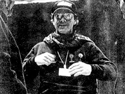

From a book on Batman Returns
More specific reference information not known

Thunderous and heroic, sweeping and romantic, Gothic and eerie, heart-stirring and soul-pounding, Danny Elfman's music for Batman presented a perfect aural backdrop for Tim Burton's memorable images. In fact, Danny Ellman alwasy presents a perfect aural backdrop for Tim Burton's memorablw images, since he has been the composer for all five of that director's feature films--Pee-wee's Big Adventure, Beetlejuice, Batman, Edward Scissorhands, and now Batman Returns. This symbiotic union of sight and sound has produced one of the most fruitful director/composer collaborations since Alfred Hitchcock and Bernard Herrmann.
Like Batman, Elfman leads a double life:one, as a founding member of Oingo Boingo, playing energetic, witty, and indivualistic rock and roll for more than a decade; the other, as one of the movie world's most versatile and successful composers.
In addition to Burton's films, Elfman has scored Big Top Pee-wee (1988), Scrooged (1988), Midnight Run (1988), Nightbreed (1990), Darkman (1990), and Dick Tracy (1990), anong others. He's also written themes for the popular TV programs "Pee-wee's Playhouse", "Tales from the Crypt", "The Flash", and "The Simpsons". A compilation of film and television music form this oftime Grammy nominee--"Music for a Darkened Theatre"--was released in 1991 on the MCA label.
During one of his visits to the Batman Returns set, Elfman enthusiastically joined in with the rest of the crew, who were recruited to toss a nasty salad of fruits and vegetables at Danny DeVito's Penguin for a crucial scene of the movie. "I also hurled water on the Darkman set," noted the puckish Elfman.
Could this be yet another trend started by the immensely innovative Danny Elfman?